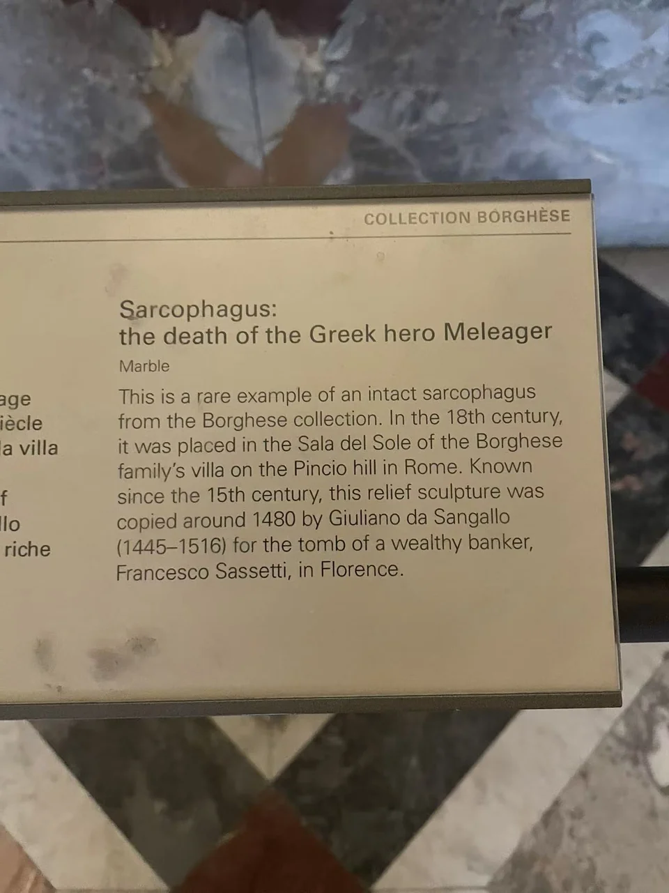

ROMAN SARCOPHAGI / R06
墨勒阿格洛斯之死石棺
先看中央横卧的死者，再看两端：原因、死亡与哀悼被放在同一面石棺上。

- 年代
- 约180年
- 材料
- 大理石
- 收藏
- 卢浮宫
- 观看地点
- 卢浮宫 · 巴黎
- 馆藏号
- Ma 539
- 制作地区
- 罗马
- 发现地记录
- 意大利（馆方目录）
哀悼并不是唯一一幕
中央的墨勒阿格洛斯躺在床上，身旁的人俯身、转头或举起手臂。卢浮宫目录将左侧识为母亲阿尔泰亚把木柴送向火焰，右侧则保留英雄与舅父冲突的场面。它没有照着时间顺序排成连续画格，而是让不同阶段围住死亡的中心。 [7]
白色表面之外
靠近看，披衣与身体的浅深关系仍很丰富。馆方还记录火把、衣带、凳子和武器等处的红色颜料残迹；今日石色只保存了古代视觉效果的一部分。这件约180年、在罗马制作的石棺曾属博尔盖塞收藏，1807年购入卢浮宫。 [7]
现场展签 · 1张

资料与来源
断代、收藏与文献说明
图像人物及颜料位置据卢浮宫目录；现场照片不足以逐处识别所有残色。 [7]